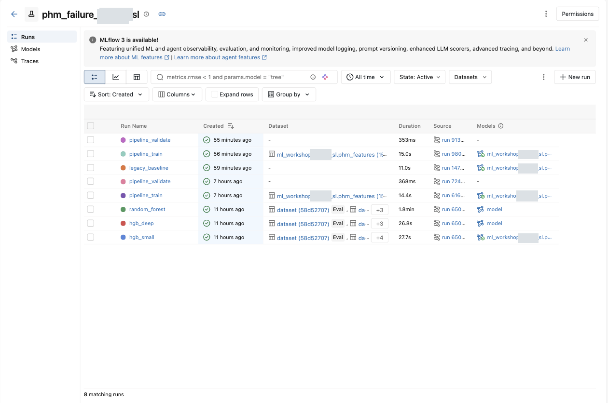

2) 모델 실험과 등록¶
1단계 - 학습·검증 구간 나누기¶
- 노트북을 열고 내 스키마를 입력한 뒤 셀 2-1까지 실행합니다.
- 시계열 데이터는 무작위로 섞지 않고 시간으로 나눕니다. 1~45일로 학습하고 46~60일로 검증합니다.
2단계 - 3번 학습하고 MLflow에 기록하기¶
- 셀 2-2를 실행합니다(약 2분). 설정이 다른 모델 3개를 학습합니다.
- 결과 표에서
val_auc순서를 확인합니다.
| run_name | val_auc | val_recall_at_p50 | alert_threshold |
|---|---|---|---|
| hgb_small | 약 0.94 | 약 0.74 | 약 0.16 |
| hgb_deep | 약 0.94 | 약 0.63 | |
| random_forest | 약 0.94 | 약 0.63 |
| 지표 | 뜻 |
|---|---|
val_auc |
고장 임박 행을 정상 행보다 높게 점수 매기는 정도 (1에 가까울수록 좋음) |
val_recall_at_p50 |
경보 2번 중 1번은 진짜(정밀도 50%)가 되는 문턱값에서, 고장 전 24시간 구간의 10분 관측 행 중 몇 %를 경보로 잡는가 |
alert_threshold |
그 기준을 만족하는 확률 문턱값. 모델 안에 함께 저장됩니다 |
실습 지표는 관측 행 기준입니다
val_recall_at_p50은 고장 건수가 아니라 10분 단위 관측 행으로 셉니다. 운영에서는 고장 사건 단위로 "고장 몇 시간 전에 처음 경보했는가"와 오경보 수를, 모델에 저장된 경보 문턱값 기준으로 따로 확인합니다. 화면의 수치는 합성 데이터로 얻은 실습 결과입니다.
3단계 - Experiments 화면에서 비교하기¶
- 왼쪽 사이드바 Experiments →
phm_failure_<내 스키마>를 엽니다. - 실행 3개를 체크하고 Compare를 누릅니다.
val_auc,val_recall_at_p50을 나란히 봅니다. -
실행 하나를 열어 Parameters(autolog가 기록), Metrics, Datasets(학습에 쓴
phm_features), Artifacts(모델 파일)를 확인합니다.
화면의 개인 및 환경 식별 정보는 가렸습니다.
Genie Code로 해 보기 · 실험 비교
4단계 - Unity Catalog에 등록하고 @champion 붙이기¶
- 셀 2-4를 실행합니다. 가장 좋은 실행의 모델을
mlops_edu_dev.<내 스키마>.phm_failure_model로 등록하고 별칭@champion을 붙입니다. - Catalog →
<내 스키마>→ Models →phm_failure_model을 엽니다. 버전 1에@champion이 보이면 완료입니다.
Citizen ML Engineer: UI로도 할 수 있습니다
Experiments의 실행 화면에서 Register model 버튼을 누르고, 모델 버전 화면에서 Aliases에 champion을 입력해도 같은 결과입니다.
Genie Code로 해 보기 · 별칭으로 불러오기
코드 이해하기¶
| 코드 | 의미 |
|---|---|
mlflow.sklearn.autolog(log_models=False) |
파라미터를 자동 기록. 모델은 아래에서 직접 기록 |
mlflow.log_input(mlflow.data.load_delta(...)) |
학습 데이터(UC 테이블)를 실행에 기록 |
PHMFailureModel (phm_model.py) |
학습한 모델을 감싸 출력을 fail_prob·alert로 통일. 배치·실시간·엣지가 같은 형식을 받음 |
mlflow.pyfunc.log_model(..., code_paths=[...]) |
래퍼 코드도 모델과 함께 저장 → Serving·엣지에서 그대로 불러옴 |
models:/...@champion |
버전 번호 대신 별칭으로 부름. champion이 바뀌어도 쓰는 쪽 코드는 그대로 |
Stage(Staging/Production)는 쓰지 않습니다
예전 Workspace Model Registry의 Stage 대신, Unity Catalog 모델은 별칭으로 단계를 표시합니다.
Step 2 완료
다음 3) 학습 파이프라인 자동화에서는 이 과정을 .py 파일로 나눠 Job으로 만듭니다. 시간이 남으면 2.1 기존 모델 등록을 읽어 보세요.